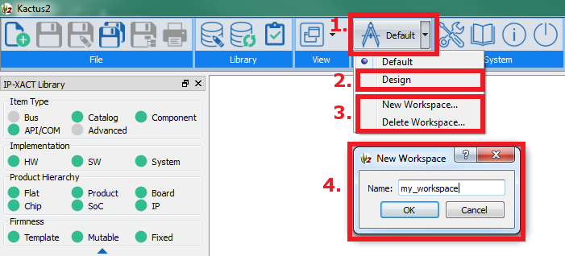
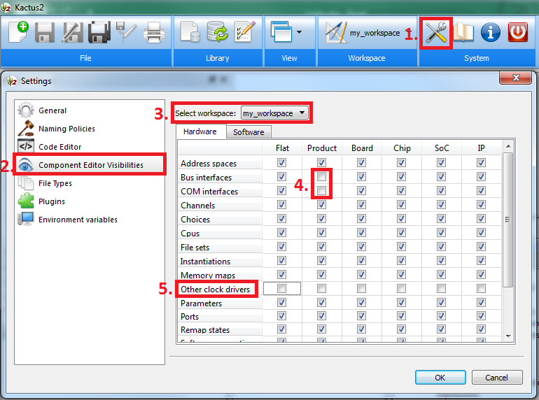
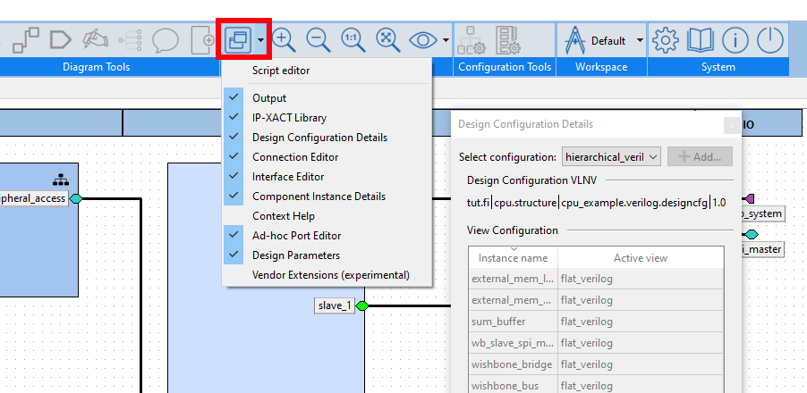

Workspaces
Workspaces allow you to customize the sizes, locations, and visibilities of widgets for specific situations.
- Click workspace button on the top ribbon for workspace menu.
- You may select an existing workspace here.
- Creating new ones and deleting existing ones are supported.
- Insert the name for the new workspace on creation.

You may also customize what is seen in the component editor, while using a workspace:
- Open settings.
- Select Component Editor Visibilities.
- Choose the workspace which you wish to customize.
- Unchecking/checking items hides/shows the component editor section on the row in the hierarchy level of the given column.
For instance, you may decide that product level components do not need to show sections for external interfaces.
- By clicking a row or a column header, the whole row or column is checked/unchecked. As another example, you may
decide that since this workspace is reserved for software work, it does not need other clock drivers.

You may also customize design editors by dragging and closing the side widgets. For instance, in the image below,
the design configuration details widget has been detached to a floating window. You may reopen closed widgets with the visible
windows menu highlighted in the image.
